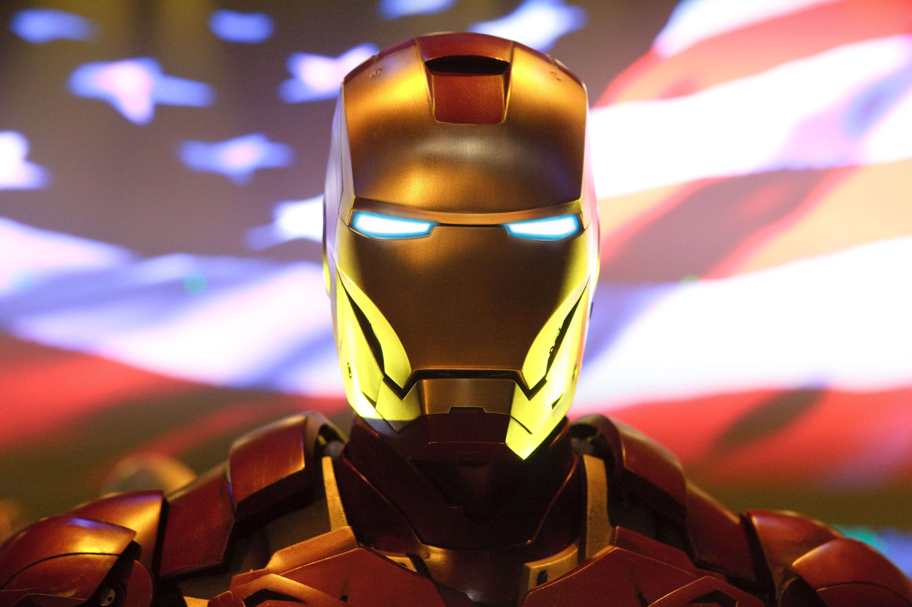
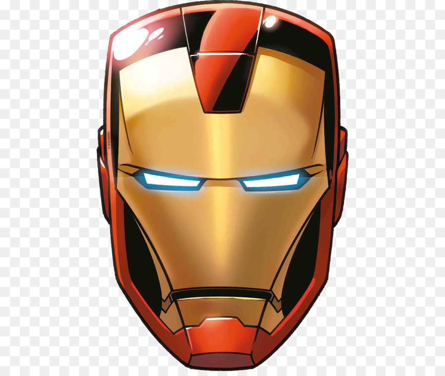

«Железный человек» (англ. Iron Man) — научно-фантастический боевик 2008 года, рассказывающий о приключениях одноимённого персонажа комиксов компании Marvel. Фильм снят кинокомпанией Marvel Studios под руководством Джона Фавро, а роль главного героя — Тони Старка, промышленника и гениального изобретателя, разработавшего экзоскелет для побега из плена и позже ставшего супергероем по имени Железный человек, исполнил Роберт Дауни-младший. Также в картине сыграли Гвинет Пэлтроу, Терренс Ховард, Джефф Бриджес, Лесли Бибб, Шон Тоуб, Фаран Таир, Кларк Грегг, Пол Беттани и Тим Гини.
Фильм разрабатывался с 1990-х годов компаниями Universal Studios, 20th Century Fox и New Line Cinema, а в 2006 году Marvel Studios выкупила права на съёмку. Для Marvel это был первый полностью финансово самостоятельный проект. Фавро, став руководителем съёмок, принял решение снимать фильм в первую очередь в Калифорнии, чтобы выделить «Железного человека» среди многочисленных фильмов про супергероев, снятых в Нью-Йорке. Во время съемок актеры могли свободно изменять свои диалоги, потому что всё внимание было сосредоточено на сюжете фильма. Резиновые и металлические брони, созданные Стэнли Уинстоном, были дополнены компьютерной графикой для создания главного героя.
Фильм был отлично принят публикой, особенно хвалили актёрскую игру Роберта Дауни[2]. Американский институт киноискусства включил «Железного человека» в десятку лучших фильмов 2008 года. Дауни, Фавро и Пэлтроу участвовали в сиквеле «Железный человек 2», вышедшем 7 мая 2010 года. Также Дауни сыграл эпизодическую роль Тони Старка в фантастическом боевике «Невероятный Халк». Американская ассоциация кинокомпаний присвоила фильму рейтинг PG-13 (детям до 13 лет только с родителями) из-за научно-фантастического уклона и проявлений насилия. «Железный человек» положил начало киновселенной, разработанной Marvel Studios.
